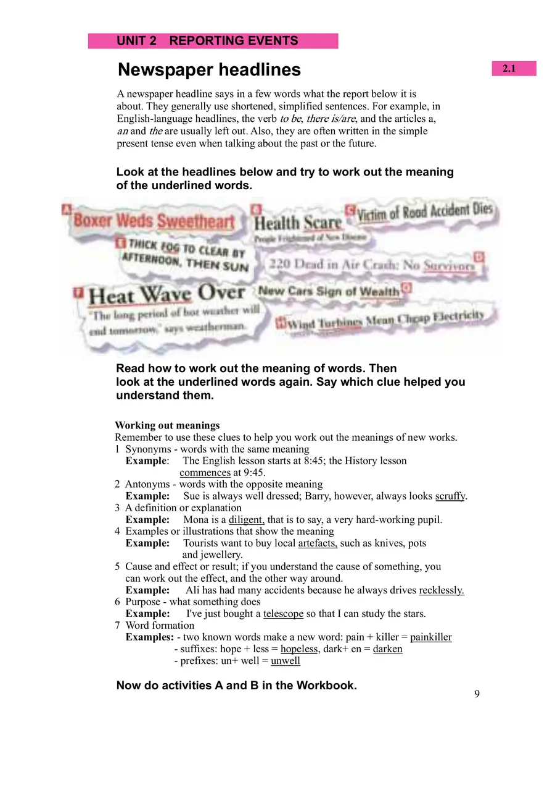

UNIT 2 REPORTING EVENTS 2.1 Newspaper headlines
A newspaper headline says in a few words what the report below it is about. They generally use shortened, simplified sentences. For example, in English-language headlines, the verb to be, there is/are, and the articles a, an and the are usually left out. Also, they are often written in the simple present tense even when talking about the past or the future. Look at the headlines below and try to work out the meaning of the underlined words. A Boxer Weds Sweetheart (underlined: Sweetheart) B Health Scare — People Frightened of New Disease (underlined: Scare) C Victim of Road Accident Dies (underlined: Victim) D 220 Dead in Air Crash: No Survivors (underlined: Survivors) E THICK FOG TO CLEAR BY AFTERNOON, THEN SUN (underlined: FOG) F Heat Wave Over — "The long period of hot weather will end tomorrow," says weatherman. (underlined: Heat Wave) G New Cars Sign of Wealth (underlined: Wealth) H Wind Turbines Mean Cheap Electricity (underlined: Turbines)
Read how to work out the meaning of words. Then look at the underlined words again. Say which clue helped you understand them. Working out meanings Remember to use these clues to help you work out the meanings of new works. 1 Synonyms - words with the same meaning Example: The English lesson starts at 8:45; the History lesson commences at 9:45. 2 Antonyms - words with the opposite meaning Example: Sue is always well dressed; Barry, however, always looks scruffy. 3 A definition or explanation Example: Mona is a diligent, that is to say, a very hard-working pupil. 4 Examples or illustrations that show the meaning Example: Tourists want to buy local artefacts, such as knives, pots and jewellery. 5 Cause and effect or result; if you understand the cause of something, you can work out the effect, and the other way around. Example: Ali has had many accidents because he always drives recklessly. 6 Purpose - what something does Example: I've just bought a telescope so that I can study the stars. 7 Word formation Examples: - two known words make a new word: pain + killer = painkiller - suffixes: hope + less = hopeless, dark+ en = darken - prefixes: un+ well = unwell Now do activities A and B in the Workbook.
new works. بدلاً من new words.، كما وردت المسافات dark+ en وun+ well دون فراغ قبل الإضافة؛ وحُفظ النص المطبوع حرفياً.[
{
"num": 1,
"prompt": "1 In the market are many jewellers and potters, selling their ______.",
"answers": [
"artefacts"
]
},
{
"num": 2,
"prompt": "2 'Let the ceremony ______!' said the old man, and the music started.",
"answers": [
"commence"
]
},
{
"num": 3,
"prompt": "3 If you want to get better marks, you must be more ______.",
"answers": [
"diligent"
]
},
{
"num": 4,
"prompt": "4 The sailor put his ______ to his eye and looked at the ships on the horizon.",
"answers": [
"telescope"
]
},
{
"num": 5,
"prompt": "5 I have a headache. Can I have some ______, please?",
"answers": [
"painkillers"
]
},
{
"num": 6,
"prompt": "6 Why doesn't he wear better clothes? He's quite rich, but he always looks ______.",
"answers": [
"scruffy"
]
}
][
{
"num": 1,
"question": "'Too many crimes go unpunished,' says Police Chief. (underlined: unpunished)",
"model_answer": "Clue: Word formation (prefix un- + punish + -ed) | Meaning: not punished.",
"explain_ar": "البادئة un- تعطي النفي (= دون عقاب / غير معاقَب)."
},
{
"num": 2,
"question": "The firemen were exhausted after fighting the fire. 'I'm extremely tired,' one said. 'I just want to sleep.' (underlined: exhausted)",
"model_answer": "Clue: Synonym ('extremely tired') / Cause and effect | Meaning: very tired / worn out.",
"explain_ar": "جاء المرادف الصريح extremely tired في الجملة الثانية مباشرة."
},
{
"num": 3,
"question": "'Don't be silly. Try to behave in a sensible way,' the teacher said. (underlined: sensible)",
"model_answer": "Clue: Antonym (opposite of 'silly') | Meaning: wise / reasonable.",
"explain_ar": "التضاد مع silly (أحمق/سخيف) يدل على معنى عاقل ومتزن."
},
{
"num": 4,
"question": "We've just bought a microwave to save time cooking. (underlined: microwave)",
"model_answer": "Clue: Purpose ('to save time cooking') / Word formation | Meaning: an electric oven/machine for cooking food quickly.",
"explain_ar": "بيان الغرض (to save time cooking) مع تركيب micro+wave يوضحان أنها أداة طهي سريعة."
},
{
"num": 5,
"question": "In his book, Hussein wrote about his many exploits, such as sailing around the North Pole and flying in a balloon. (underlined: exploits)",
"model_answer": "Clue: Examples ('such as sailing around the North Pole and flying in a balloon') | Meaning: brave or exciting adventures/deeds.",
"explain_ar": "الأمثلة بعد such as توضح المقصود: مغامرات أو إنجازات جريئة."
},
{
"num": 6,
"question": "(WB p. 14) Many trees and bushes are evergreens, that is to say they have leaves all year round. (underlined: evergreens)",
"model_answer": "Clue: Definition or explanation ('that is to say...') & Word formation (ever + green) | Meaning: trees/plants that stay green with leaves all the year round.",
"explain_ar": "عبارة that is to say تعرّف الكلمة حرفياً بعدها."
},
{
"num": 7,
"question": "(WB p. 14) Mona's writing is very easy to read because she writes very neatly. (underlined: neatly)",
"model_answer": "Clue: Cause and effect ('because' + very easy to read) | Meaning: tidily / clearly / carefully.",
"explain_ar": "الأثر (easy to read) يوضح سبب الكلمة (بخط مرتّب وواضح)."
}
]{
"pb_text_vs_image": "طُوبقت صفحة PB ص 9 مع شريحة 400 DPI للعناوين A–H: استُخرجت جميع العناوين وتحديد الكلمات المسطّرة بالأحمر بدقة؛ كما حُفظت الصياغات الحرفية للكتاب ('new works.', 'dark+ en', 'un+ well').",
"wb_ocr_vs_image": "قُورنت صفحتا WB ص 13–14 مع tesseract.js eng: أخرجت OCR رقم الدرس '241 A' بدلاً من '2.1 A' و'I just' → 'T just' و'In his' → 'Inhis'، وصُحّحت جميعها بصرياً من wb-014.png وwb-015.png."
}